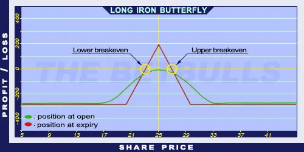

Description and use
Long Iron Butterfly option strategy can be profitable if the underlying’s price increases or moves within given levels. It is the combination of the Bull Put Spread and the Bear Call Spread. The combination of two income strategies result another income strategy. The middle Put option’s strike equals to the middle Call option’s strike price. This gives the butterfly shape. Ideally, the share price closes between the middle components’ strike prices, which maximises the profit. The direction of the market is neutral. The investor speculates on shares with low volatility and small price changes. The strategy is a net credit investment. It is a short-term investment, usually one month or less.
- Type: Neutral
- Transaction type: Credit
- Maximum profit: Limited
- Maximum loss: Limited
- Strategy: Income strategy, Neutral strategy
Opening the Position
Long Iron Butterfly Option Positions
- Buy a lower strike (OTM) Put option.
- Sell a middle (ATM) Put option.
- Sell a middle (ATM) Call option.
- Buy a higher strike (OTM) Call option.
All components have the same expiration and the strategy uses both Call and Put options. The difference between consecutive strike prices must be equal.
Steps
Entry:
- Make sure the trend is inclining or stagnating at a certain level.
Exit:
- The position can be closed before expiration. The commissions should not be forgotten during calculations.
Basic Characteristics
- Maximum loss: Difference between consecutive strike prices - net credit.
- Maximum profit: Received net credit.
- Time decay: Time decay has a positive effect on the value when the position is profitable, and a negative effect when the position is lossmaking.
- Lower breakeven point: Middle strike price - Net Credit.
- Upper breakeven point: Middle strike price + Net Credit.
Advantages and Disadvantages
Advantages:
- The investor can profit from share prices moving within given limits.
- Low and limited risk with potential income.
Disadvantages:
- Potentially higher profit is only possible close to expiration.
Closing the Position
Buy back the Short options and sell the Long options.
Mitigation of Losses
Close the position the above-mentioned way.
Example

Long Iron Butterfly strategy example with ABCD traded for $25.00 on 12.04.2017. The investor engages in the following:
- Buy a Long Put option with a strike price of $20.00, expiring in May 2017, for a premium of $0.30.
- Sell a Short Put option with a strike price of $25.00, expiring in May 2017, for a premium of $1.50.
- Sell a Short Call option with a strike price of $25.00, expiring in May 2017, for a premium of $2.00.
- Buy another Long Call option with a strike price of $30.00, expiring in May 2017, for a premium of $0.50.
- Net credit: $2.70
- Maximum loss: $2.30
- Maximum profit: $2.70
- Lower breakeven point: $22.30
- Upper breakeven point: $27.70